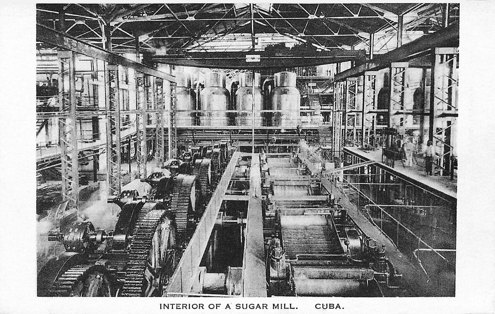

左は1904年のキューバ砂糖農園でのサトウキビ刈り取り（米国議会図書館蔵）。右は1940年頃の絵葉書に残るCentral Preston（オルギン県）の製糖所全景。主張1の物理単位は収穫労働と製糖設備の稼働である。いずれも1961–63年の保全投資そのものではなく、労働集約の刈り取りと固定設備としての製糖所の形を示す補助写真である。写真：Library of Congress／パブリックドメイン／Unknown／パブリックドメイン／Wikimedia Commons

1920年頃の絵葉書「Interior of a sugar mill, Cuba」。粉砕・煮沸の機械列が写る。JUCEPLANが後年に指摘した「製糖工業への投資の相対不足」は、このような固定設備の保全と更新を削る配分を指す。本写真は監査済みの年次保全支出表ではない。写真：American Photo Studios／パブリックドメイン／Wikimedia Commons
CIA Center for the Study of Intelligence, Nicholas Cullather, Operation PBSUCCESS: The United States and Guatemala, 1952–1954（1994、機密解除PDF） — https://www.cia.gov/readingroom/docs/DOC_0000134974.pdf
CIA FOIA Electronic Reading Room, Guatemala collection（PBSUCCESS関連文書群） — https://www.cia.gov/readingroom/collection/guatemala
Ernesto Che Guevara, Pasajes de la guerra revolucionaria（上陸・初期戦闘の本人回想。Ocean Press版テキスト） — https://www.marxists.org/espanol/guevara/escritos/op/libros/pasajes/index.htm
同書「Alegría de Pío」章（1956-12-05の敗戦記述） — https://www.marxists.org/espanol/guevara/escritos/op/libros/pasajes/02.htm
同書「La ofensiva final: La batalla de Santa Clara」ほか最終攻勢章 — https://www.marxists.org/espanol/guevara/escritos/op/libros/pasajes/index.htm
CIA, The Cuban Economy: A Statistical Review 1957–68（砂糖生産表。Reading Room PDF） — https://www.cia.gov/readingroom/docs/CIA-RDP79S01091A000200020001-7.pdf
Ernesto Che Guevara, Speech at Punta del Este, 1961-08-08（工業・砂糖目標。Marxists alt） — https://www.marxists.org/archive/guevara/1961/08/08-alt.htm
Jorge Pérez-López, “The Cuban Sugar Industry 1959–2019”, ASCE（目標下方修正と工業化後退） — https://www.ascecubadatabase.org/wp-content/uploads/2020/01/v29-asce_2019_30perezlopez.pdf
Che Guevara Congo diary（失敗の自己評価。Marxists archive系統） — https://www.marxists.org/archive/guevara/1965/congo/index.htm
Ernesto Che Guevara, La guerra de guerrillas（foco理論の本人テキスト） — https://www.marxists.org/archive/guevara/1963/war-guerrilla/index.htm
National Security Archive, “Che Guevara and the CIA in the Mountains of Bolivia”（2020-10-09） — https://nsarchive.gwu.edu/briefing-book/cuba-intelligence/2020-10-09/che-guevara-cia-mountains-bolivia
National Security Archive, “The Death of Che Guevara: U.S. declassified documents”（NSAEBB5） — https://nsarchive2.gwu.edu/NSAEBB/NSAEBB5/index.html
Infobae, 「94 años del nacimiento del Che Guevara…」（出生証明は1928-06-14、2022-06-14） — https://www.infobae.com/sociedad/2022/06/14/94-anos-del-nacimiento-del-che-guevara-un-viaje-a-sus-huellas-en-rosario-su-cuna-en-el-mundo/
Jon Lee Anderson, Che Guevara: A Revolutionary Life（1997）。NYT Books抜粋（5月14日説） — https://www.nytimes.com/books/first/a/anderson-guevara.html
Paco Ignacio Taibo II, Ernesto Guevara, también conocido como el Che（伝記。生涯年次の照合用） — 書誌: Planeta / 各言語版
Ernesto Che Guevara, The Motorcycle Diaries（Notas de Viaje） — https://www.marxists.org/archive/guevara/1952/motorcycle-diaries/index.htm
Alberto Granado, Traveling with Che Guevara — 書誌: Grove Press英訳版ほか
U.S. Department of State Office of the Historian（キューバ革命前後の外交文書索引） — https://history.state.gov/historicaldocuments
La Cabaña処刑推計と1959-02-05書簡英訳の所在（Wikipedia “La Cabaña” footnotes; Cuba Archive） — https://en.wikipedia.org/wiki/La_Caba%C3%B1a ／ http://www.futurodecuba.org/che_victims.htm
Jorge G. Castañeda, Compañero: The Life and Death of Che Guevara（1997/1998。全国処刑200–700） — 書誌: Knopf / Vintage
The Guardian, “After 40 years… Che’s photographer sues for copyright”（2000-08-07） — https://www.theguardian.com/world/2000/aug/07/cuba.mattwells
Smithsonian Magazine, “The Story Behind Che’s Iconic Photo”（Korda・Feltrinelli） — https://www.smithsonianmag.com/travel/iconic-photography-che-guevara-alberto-korda-cultural-travel-180960615/
G.B. Hagelberg & José Alvarez, “Command and Countermand: Cuba’s Sugar Industry under Fidel Castro”, ASCE — https://www.ascecubadatabase.org/wp-content/uploads/2014/09/v16-hagelbergalvarez.pdf
Ernesto Che Guevara, Speech at the United Nations, 1964-12-11 — https://www.marxists.org/archive/guevara/1964/12/11.htm
Ernesto Che Guevara, “At the Afro-Asian Conference in Algeria”, 1965-02-24（共犯文言を含む全文） — https://www.marxists.org/archive/guevara/1965/02/24.htm
学術論文: “Problems of Fighting Imperialism in Che Guevara’s Algerian Speech”（ソ連名指しではない点の整理） — https://doi.org/10.21638/spbu02.2025.113
The Independent, “Man behind Che Guevara portrait wins copyright after four decades”（2000年和解） — https://www.independent.co.uk/incoming/man-behind-che-guevara-portrait-wins-copyright-after-four-decades-701646.html
CIA, “CIA and Guatemala Assassination Proposals 1952–1954” — https://www.cia.gov/readingroom/docs/DOC_0000135796.pdf
Carmelo Mesa-Lago整理を引用する二次（サトウキビ作付1958–63年約25%減）。Pérez-López The Economics of Cuban Sugar 経由 — https://api.pageplace.de/preview/DT0400.9780822976714_A49442767/preview-9780822976714_A49442767.pdf
Jorge F. Pérez-López, The Economics of Cuban Sugar（作付転用175,000 ha。輸出6.4→3.5 Mt。製糖所9基解体。1963年戦略転換） — University of Pittsburgh Press / プレビュー抜粋同上
Brian H. Pollitt & G.B. Hagelberg, Cambridge Journal of Economics（労働供給危機） — https://ideas.repec.org/a/oup/cambje/v18y1994i6p547-69.html
USDA ERS, “Agriculture and Food Situation in Cuba”（1962-05。刈り手不足と保全問題） — https://downloads.usda.library.cornell.edu/usda-esmis/files/jq085j963/4b29b946g/2b88qh00d/ERSF-05-07-1962_Agriculture_and_Food_Situation_in_Cuba.pdf
Stanford History, extreme weather and the Cuban Revolution 1959–64（干ばつ・Flora） — https://history.stanford.edu/publications/revolution-force-more-powerful-nature-extreme-weather-and-cuban-revolution-1959-64